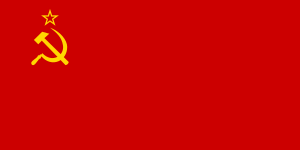

САЙТ ПРО СССР
Брат брату брат
ТАК РАБОТАЛ, ТАК И ЗАРАБОТАЛ!
Растрелять
Информация СССР
Сою́з Сове́тских Социалисти́ческих Респу́блик, сокращённо СССР, Сове́тский Сою́з, Сою́з ССР — государство в Евразии, существовавшее с 1922 года по 1991 год.
СССР на момент распада занимал почти 1⁄6 часть обитаемой суши Земли с населением 293 млн человек, а также 2-е место в мире по уровню промышленного производства — 16,5 % мирового объёма и 7-е место в мире по уровню национального дохода.
СССР был образован на территории, которую к 1917 году занимала Российская империя без Финляндии, части Польского царства и некоторых других территорий.Перейти к разделу «#География СССР» Советская власть на этой территории установилась в результате Октябрьской революции 1917 года и последовавшей за ней Гражданской войны. 30 декабря 1922 года РСФСР, Украинская ССР, Белорусская ССР и Закавказская СФСР объединились в одно государство — Союз ССР — с едиными органами политической власти со столицей в Москве, с сохранением де-юре за каждой союзной республикой права свободного выхода из Союза.
22 июня 1941 года Германия при поддержке союзников напала на СССР. Началась Великая Отечественная война, после победы в которой СССР стал, наряду с США, сверхдержавой. Советский Союз доминировал в мировой системе социализма, а также был соучредителем ООН, постоянным членом Совета Безопасности ООН с правом ветоПерейти к разделу «СССР во Второй мировой войне (1941—1945)».
Согласно положениям Конституции 1977 года СССР провозглашался единым союзным многонациональным социалистическим государствомПерейти к разделу «#Политическая система и идеология». Союзные республики считались суверенными государствами. Порядок выхода республик из Союза с 1990 года регулировал специальный закон. Союзная республика имела право вступать в отношения с иностранными государствами, заключать с ними договоры и обмениваться дипломатическими и консульскими представителями, участвовать в деятельности международных организаций. Среди 50 стран-основателей ООН наряду с СССР были и две его союзные республики: БССР и УССРПерейти к разделу «#Административно-территориальное деление СССР».
Из-за низкой эффективности экономической системы, сильной зависимости от цен на энергоресурсы, существенными расходами на гонку вооружений, массового дефицита товаров, межнациональных противоречий и других проблем во второй половине 1980-х годов в СССР произошёл экономический и политический кризис. Обострилось внутреннее политическое противостояние. Попытки реформирования советской системы (демократизация, переход к рыночной экономике и многопартийности) не помогли решить накопившиеся противоречия. В 1988—1991 годах произошёл ряд законодательных конфликтов между союзным центром и союзными республикамиПерейти к разделу «Перестройка (1985—1991)». Последствия всех этих событий привели к распаду СССР (см. Причины распада).
17 марта 1991 года состоялся Всесоюзный референдум о сохранении СССР, на котором 77,85 % граждан советских республик, принявших участие в референдуме, высказались за сохранение союза как обновлённой Федерации равноправных социалистических суверенных республик. Попытка государственного переворота ГКЧП в августе 1991 года вызвала массовые народные демонстрации по всему СССР в защиту демократического курса Перестройки и законно избранной в 1989 году государственной власти — Съезда народных депутатов СССР. Эпицентром противостояния путчистам считаются события у Белого дома в Москве. В результате попытка захвата власти ГКЧП провалилась. 8 декабря 1991 года тремя государствами-учредителями Союза были подписаны Соглашения о прекращении существования СССР и создании СНГ. 26 декабря 1991 года Совет Республик Верховного Совета СССР принял декларацию о прекращении существования СССР.
Российская Федерация была признана де-фактогосударством-правопреемником СССР в международно-правовых отношениях и заняла его место в Совете Безопасности ООН.Перейти к разделу «#Распад Советского Союза (1990—1991)» В то же время, согласно действующему законодательству Украины, последняя является преемницей прав и обязательств УССР и международных договоров СССР. Между государствами существует незакрытый вопрос о государственном долге СССР.
Образование СССР(1922-1924)
29 декабря 1922 года на конференции делегаций от съездов Советов РСФСР, УССР, БССР и ЗСФСР был подписан Договор об образовании СССР. Этот документ был утверждён 30 декабря 1922 года I-м Всесоюзным съездом Советов и подписан главами делегаций. Эта дата и считается датой образования СССР, хотя Совет Народных Комиссаров СССР (Правительство) и наркоматы (министерства) были созданы только 6 июля 1923 года. Возникновение СССР явилось следствием действий определённых исторических факторов, главным из которых была Великая Октябрьская социалистическая революция. Среди причин образования СССР имели место внешние факторы: угроза новой военной интервенции, экономическая изоляция Советской страны, попытки нажима Запада. К 1922 г. централизация руководства обороной страны была достигнута на всём пространстве. Преобразования федеративных отношений между советскими республиками начались весной 1922 г.
Формально в состав СССР первоначально входили только 4 союзные республики, однако некоторые другие республики уже имели договорные отношения между собой, поэтому реальная картина межгосударственных отношений на момент образования СССР выглядела следующим образом:
В последующие годы произошло упорядочивание этой системы. При национально-территориальном размежевании народов Средней Азии были ликвидированы де-юре Бухарская Социалистическая Советская Республика и Хорезмская Социалистическая Советская Республика (образованные после установления просоветской власти в бывших вассалах Российской империи Бухарском эмирате и Хивинском ханстве, на их месте были образованы новые союзные республики. Для Нахичеванской Советской Республики был определён статус АССР. Закавказская СФСР была расформирована, непосредственно входившие в неё ССР получили статус союзных, а ССР Абхазия (договорная с Грузией) понижена в статусе до АССР. В дальнейшем в результате сложных преобразований некоторые автономии были выделены из РСФСР в самостоятельные советские республики: Казахскую, Киргизскую, Таджикскую, Туркменскую и Узбекскую. Окончательное утверждение на II съезде Советов СССР, состоявшегося в январе 1924 г. и окончательно утвердившего Основной Закон СССР. Основной Закон СССР 1924 года утвердил создание нового государства, не имеющего в истории аналогов по устройству. По значению Конституция являлась союзным договором, принятом на съезде Советов. Впоследствии отсылка на союзный договор в официальном обороте была сведена к минимуму. Советское конституционное строительство было начато принятием Основного Закона. Конституция СССР отражала преемственность базовых основ с Конституцией РСФСР. Конституция определила Союз Советских Социалистических Республик как федеративное государство. Существовало серьёзное отличие федеративного устройства в РСФСР и Советском Союзе. РСФСР было определено государством с автономными территориями, а СССР — союзным государством. Конституцией был определён суверенитет каждой союзной республики. Этот ленинский подход, отражённый в Конституции, отличался от конфедерации и автономизации. В статьях 1 и 2 конституции определены права Советского Союза. Полномочия, которые были отнесены к главным органам власти СССР, делились на два основных направления. Эти направления касались внешнеполитических и хозяйственных вопросов. К компетенции центральных органов СССР были отнесены вопросы, связанные с межреспубликанскими отношениями. Управление вооружёнными силами также было отнесено к Союзным полномочиям. Основной Закон закрепил не только права Союзу для государственного строительства, но гарантировал права союзным республикам. В полномочия Союза входило изменение границ СССР, а также приём новых республик в состав СССР. Народное хозяйство и основные отрасли промышленности оставались в ведении Союза. Конституцией Союзные Республики права в области экономики зафиксировали за собой. К компетенции Союза были отнесены вопросы создания системы судопроизводства, уголовного и гражданского законодательства СССР. Союзные власти задавали основы просвещения, охраны труда и здоровья народа. Основной Закон зафиксировал за Союзом важные функции, позволяющие обеспечивать государственность стране. Отдельная глава в Конституции предусматривала права и гарантии республик.
Флаги СССР(1922-1924)
Флаг СССР с 1 июля 1923 года
Флаг СССР с 12 апреля 1924 года
Флаг СССР с 18 апреля 1924 года
Флаг СССР с 1936 года
Флаг СССР с 19 августа 1955 года
